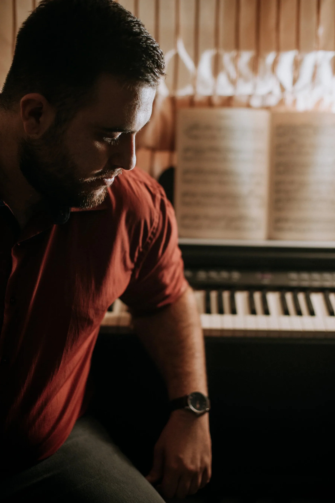
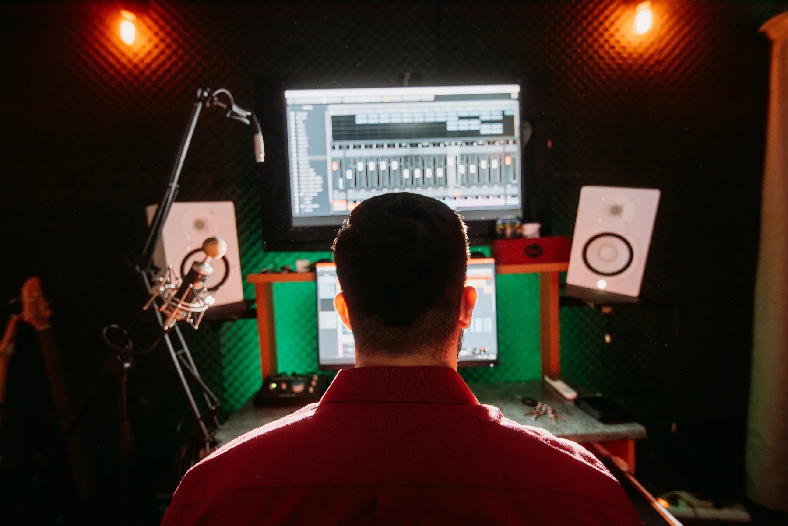
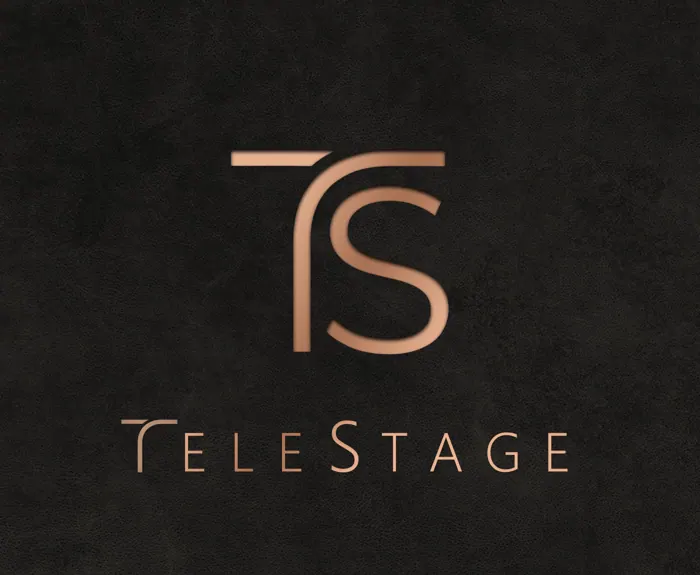
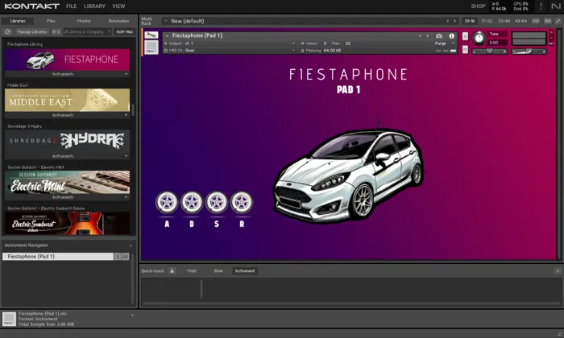

Giorgos
Batzios
Ηχολήπτης, sound engineer – μουσικός


- Θέατρο
- Live
- Ηχογράφηση
- Μίξη
- Σύνθεση
Επιλεγμένα έργα

Θέατρο · Μέγαρο Μουσικής Αθηνών, 2025
Αντιγόνη
Σύνθεση μουσικής, προγραμματισμός Ableton και μίξη ήχου.

DAW plugin · 2026
TeleStage
Ο δικός μου 3D spatial mixer και reverb: τοποθετείς τα μικρόφωνα, όχι μόνο τους ήχους.

Παραγωγή · Δική μου βιβλιοθήκη Kontakt
Drive Away
Μια ολόκληρη παραγωγή φτιαγμένη μόνο από τους ήχους του αυτοκινήτου μου.